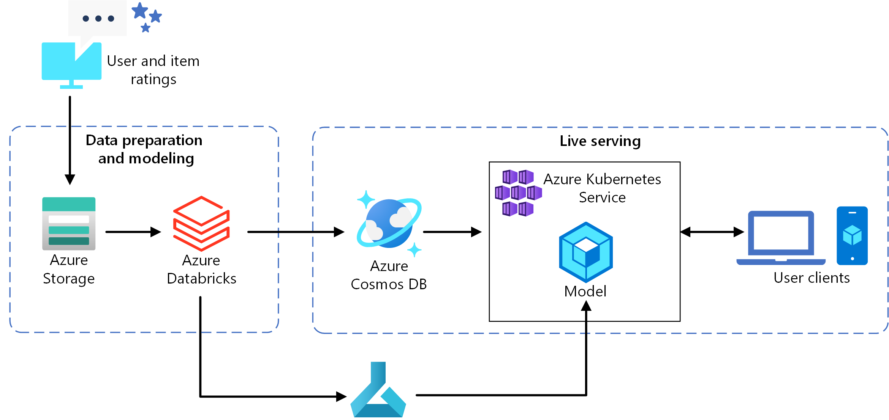
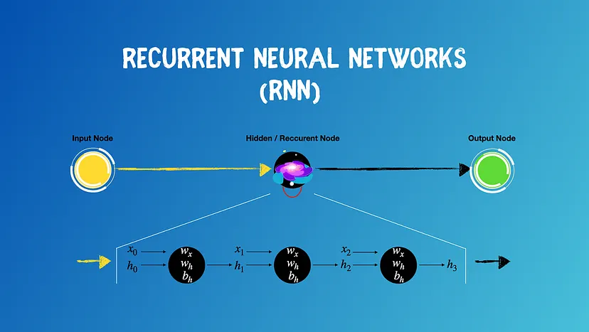
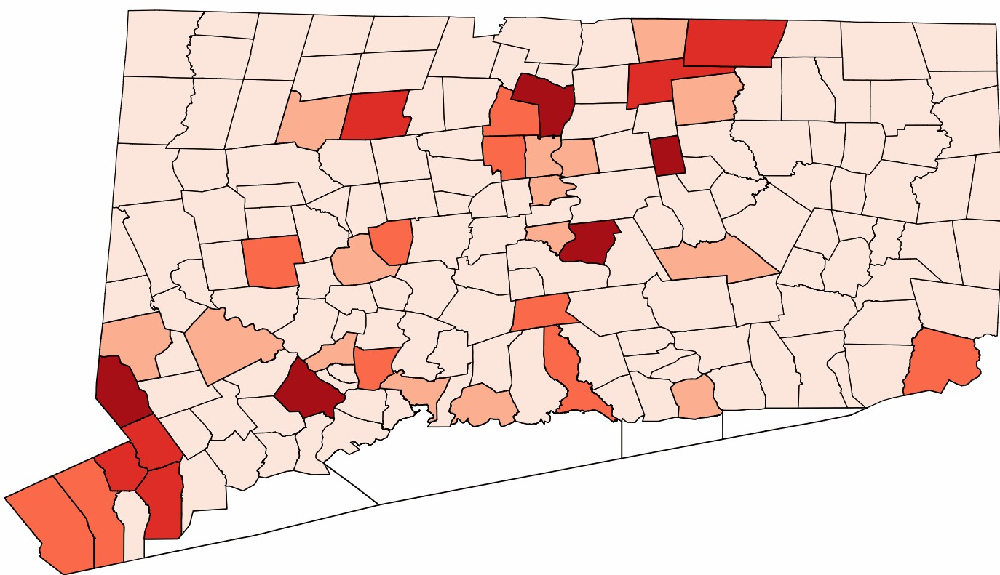
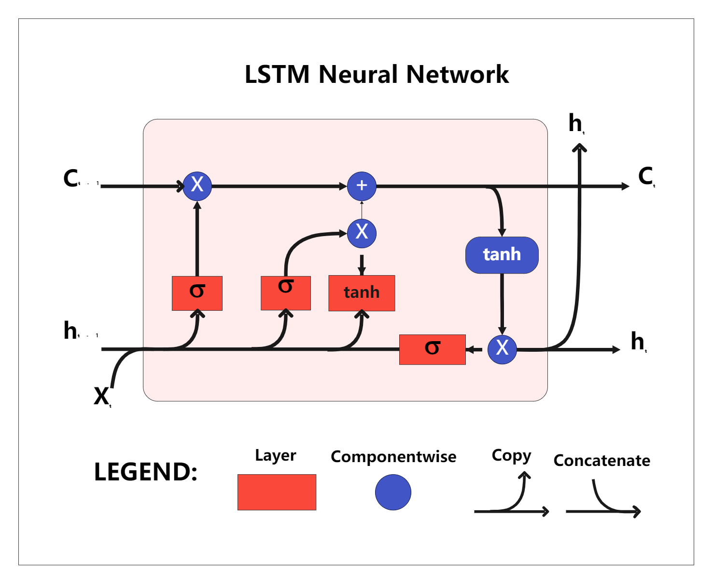
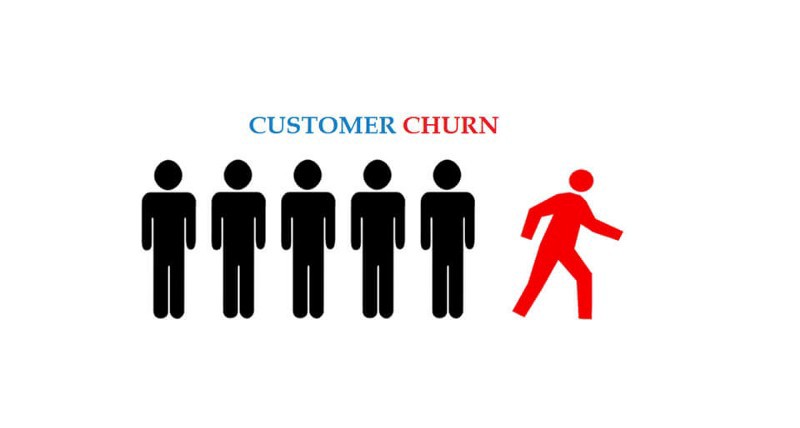

ATLAS is a production-grade algorithmic trading platform that ingests live market data across 25 tickers, generates ML-powered signals using an XGBoost/LightGBM ensemble with HMM regime detection, and fuses price, FinBERT sentiment, and macroeconomic data into a single confidence-filtered trading signal. It includes a RAG-based market brief generator, real-time risk engine, custom backtester (59.8% avg win rate), and live paper trade execution via Alpaca - all surfaced through a FastAPI backend, Streamlit dashboard, and full MLOps stack with MLflow and Evidently AI.
A recruiter search app where users describe the candidates they want in plain English and get back a ranked, pageable list. An LLM (Anthropic API) turns each brief into validated structured filters, while Postgres handles matching and ranking, so the model never sees candidate data. Built with Next.js, TypeScript, and Supabase, it adds shortlists, saved searches, row-level company isolation, and Stripe webhook billing, all on generated demo data.
Designed a multi-agent AI architecture to simulate intelligent coordination in healthcare systems.
Developed an end-to-end ML pipeline for phishing website detection with automated preprocessing, drift monitoring, and optimized classification models.

Built an end-to-end machine learning pipeline to predict student math scores. Implemented modular src/ package architecture with separate components for data ingestion, preprocessing, and model training. Benchmarked 7 regression algorithms (Linear, Ridge, Lasso, Random Forest, XGBoost, CatBoost, AdaBoost) with GridSearchCV hyperparameter tuning, achieving R² of 0.88. Served predictions via a lightweight Flask interface deployed on Render.

Implemented an end-to-end RNN pipeline that processes movie reviews and accurately determines sentiment, showcasing deep learning in natural language processing.

Leveraged disparity analysis and predictive modeling to enable data-driven COVID-19 risk insights in Texas.

Implemented an LSTM-based generative model for next-word prediction, leveraging early stopping to improve training efficiency.
A collection of AI-driven projects focusing on intelligent agents, search algorithms, and optimization techniques, applied to problems like maze navigation, N-Queens, and game strategy.
Developed a restaurant reservation system using both Client-Server and Microservice architectures, comparing their design and performance trade-offs.

Built an ANN model to predict customer churn with optimized accuracy.
Developed a movie recommendation system, improving model accuracy by 20% through API integration and collaborated on algorithm refinement, achieving higher prediction precision.